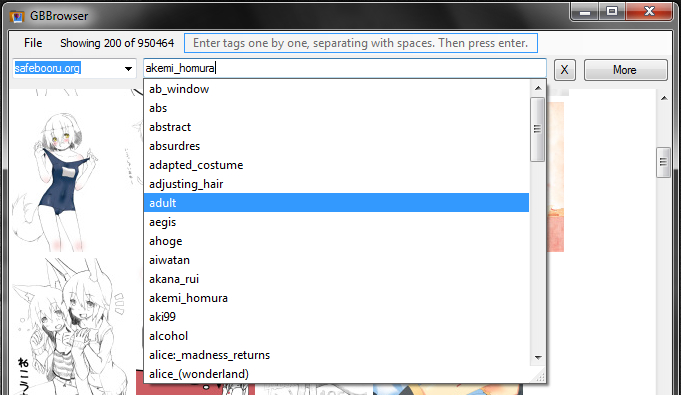
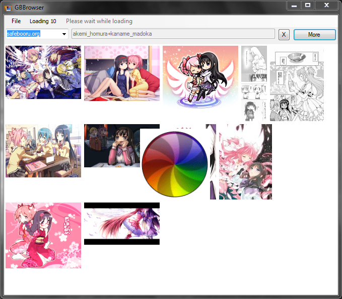

Looking for the Windows version?

Sadly, I don't have enough time and access to a Windows machine to keep the Windows version up to date. Moreover, I was not going to write it. It was made because of boredom one day. However it should still give better experience than a browser, especially on slow computers.
Latest version of GBBrowser:Windows
Requires .net. Tested on Windows XP and 7

